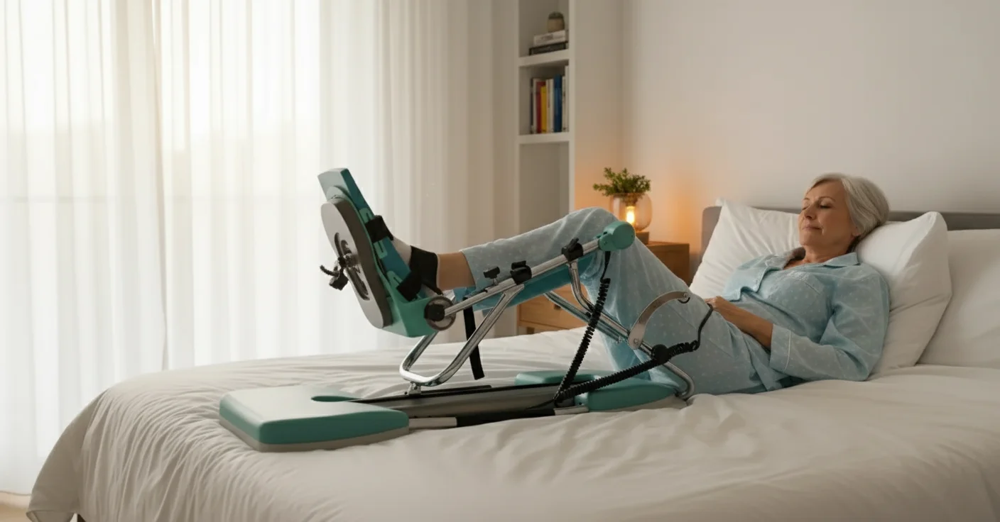

De meeste revalidatiefolders gaan er stilzwijgend van uit dat er iemand in huis is. Iemand die het been in de spalk helpt, die een glas water aangeeft, die de riemen wat losser maakt wanneer de kuit begint te knellen. Woont u alleen, dan valt die schakel weg — en net dan wordt de vraag concreet: kan ik die kinetec CPM-machine thuis wel op mijn eentje gebruiken? Het antwoord is ja, en in de praktijk lukt het bij de meeste patiënten binnen twee dagen vlot. Wat het verschil maakt, is niet kracht of lenigheid, maar voorbereiding: de juiste opstelling, een vaste volgorde bij het in- en uitstappen, en alles binnen handbereik vóór u de start-knop indrukt.
Belangrijk
Dit artikel geeft algemene informatie en vervangt geen medisch advies. Het protocol van uw chirurg heeft altijd voorrang. Woont u alleen, bespreek dat dan uitdrukkelijk vóór uw opname: het ziekenhuis houdt daar rekening mee bij de planning van uw ontslag en bij de thuiszorg die zij voor u aanvragen.
Wat Alleen Wonen Écht Moeilijker Maakt
Vraag patiënten die alleen revalideren waar zij tegenaan lopen, en het gaat zelden over de machine zelf. Het gaat over de tien minuten ervoor en de tien minuten erna. Vier zaken keren telkens terug.
Het been in en uit de spalk krijgen. In het ziekenhuis tilt een verpleegkundige uw been op. Thuis moet u dat zelf doen, met een knie die nog niet vrijwillig meewerkt en een quadriceps die de eerste week nauwelijks aanspant. Dit is de stap die de meeste mensen onderschat hebben.
Het gebrek aan een tussenpersoon. Een sessie duurt twintig tot dertig minuten. Ligt uw drinken in de keuken, dan stopt u de sessie na tien minuten. Doet u dat drie keer per dag, dan verliest u per week meer dan drie uur doorbeweging — precies de tijd waarin de knie soepel had moeten worden.
Geen tweede paar ogen. Een wonde die stiller ontsteekt, een kuit die dikker wordt, een been dat elke sessie iets schever in de spalk ligt: een partner ziet dat. Alleen wonend moet u dat bewust zelf controleren, op vaste momenten.
Het onzekere gevoel. Veel patiënten durven minder ver te gaan omdat ze denken: als er iets misloopt, sta ik er alleen voor. Dat is begrijpelijk, maar het is ook de belangrijkste reden waarom alleenwonende patiënten hun graden trager opbouwen dan nodig. Een goede voorbereiding neemt die rem weg.
De machine is net uw bondgenoot
Precies omdat u alleen bent, is passief doorbewegen zo waardevol. U hoeft de beweging niet zelf te maken, u hoeft niemand te vragen om uw been te plooien, en de machine houdt honderd cycli lang exact dezelfde graden aan. Wat een kinetec doet en waarom dat werkt, leest u in de complete gids over de kinetec CPM-machine en in actieve versus passieve revalidatie.
Uw Opstelling: Één Keer Goed Zetten, Weken Profijt
De belangrijkste beslissing neemt u op dag één: wáár komt het toestel te staan. Wie alleen woont, kiest bij voorkeur de plaats waar hij het grootste deel van de dag toch al zit of ligt, zodat u zich niet drie tot vier keer per dag door het huis moet verplaatsen om te oefenen.
| Opstelling | Voordeel als u alleen woont | Waar u op let |
|---|---|---|
| In de zetel of relaxstoel | U zit rechtop, hebt overzicht, kunt zelf makkelijk opstaan en zit dicht bij tv, telefoon en tafeltje | De zitting moet stevig zijn en niet te diep; een doorzakkende zetel kantelt het toestel |
| Op bed | Het been ligt volledig ondersteund, ideaal voor de langere avondsessie en voor de zwelling | Uit een laag bed opstaan met een verse knie is lastiger; leg iets vast om u aan op te duwen |
| Vaste plaats versus verplaatsen | Eén vaste plaats is bijna altijd beter: minder tillen, minder kans op vallen | Verplaats het toestel nooit terwijl u op krukken loopt |
Wilt u de afweging tussen bed en zetel volledig doornemen, lees dan de kinetec opstellen op bed of in de zetel. De bediening zelf staat stap voor stap in de handleiding om de kinetec thuis in te stellen.
Uw Klaarleglijstje vóór Elke Sessie
Dit is de kern van zelfstandig revalideren. Alles wat u tijdens een sessie van dertig minuten mogelijk nodig hebt, ligt vóór de start binnen armbereik — aan de kant van uw gezonde been, want naar de geopereerde kant reiken draait de knie.
- Uw telefoon, opgeladen, met de nummers van uw huisarts, uw kinesist en een buur of familielid als snelkeuze
- De afstandsbediening van de kinetec, niet op het toestel maar naast uw hand
- Drinken in een beker die niet omvalt, plus eventueel een koekje
- Uw pijnmedicatie, ingenomen ongeveer dertig tot veertig minuten vóór de sessie, zodat ze op haar sterkst is wanneer u de laatste graden zoekt
- Een coldpack in een handdoek, voor onmiddellijk na de sessie
- Uw krukken of looprek tegen de zetel of het bed, aan de kant waar u opstaat
- Een extra kussen om onder de heup of achter de rug te schuiven
- Uw notitieblaadje met de graden per sessie
Dit lijstje klinkt overdreven tot de eerste keer dat u met een been in de spalk merkt dat uw glas twee meter verderop staat. Wie alleen woont, kan een sessie niet even onderbreken.

Zelfstandig In en Uit de Spalk: de Vaste Volgorde
Doe dit elke keer in dezelfde volgorde. Een vaste routine voorkomt de draaibeweging die een verse knie het slechtst verdraagt, en na drie of vier keer gaat het vanzelf.
Instappen.
- Zet de spalk vooraf volledig gestrekt en zorg dat de voetplaat op uw beenlengte staat.
- Ga zitten of liggen op uw vaste plaats, met het geopereerde been recht vóór u.
- Schuif het toestel naar het been toe, niet omgekeerd. Verplaats nooit uw been in de lucht naar de spalk.
- Laat de hiel over de voetplaat glijden tot het been in de goot ligt; gebruik desnoods een gladde handdoek of een plastic zak onder de hiel om te schuiven.
- Controleer dat het scharnier van de spalk exact ter hoogte van uw knie staat. Ligt het te hoog of te laag, dan wringt het toestel zijwaarts.
- Sluit de riemen van onder naar boven: eerst de voet, dan de kuit, dan de dij. Altijd een vinger eronder.
- Stel uw graden in, druk op start en kijk de eerste twee cycli mee of het been zuiver plooit.
Uitstappen.
- Druk op stop en wacht tot de spalk in gestrekte stand komt. Stap nooit uit in een gebogen stand.
- Maak de riemen los van boven naar onder: eerst de dij, dan de kuit, dan de voet.
- Schuif de hiel over de voetplaat naar buiten. Til uw been niet op en zwaai het niet zijwaarts.
- Duw uzelf omhoog met beide handen naast uw heupen, met het gezonde been als steunbeen.
- Blijf tien seconden zitten voor u opstaat; na een half uur stilliggen is een korte duizeligheid normaal.
Twee trucs van patiënten die alleen wonen
Leg een gladde stof of een plastic boodschappenzak onder uw hiel: het been glijdt dan zonder tillen in en uit de spalk. En maak een lus van een oude riem of een badjasceintuur die u rond uw voet haakt: daarmee stuurt u het been bij zonder dat u zich vooroverbuigt over uw geopereerde knie.
Uw Dag Indelen: Vier Vaste Ankers
Zonder huisgenoot vervaagt de structuur van een dag snel. Koppel daarom elke sessie aan iets dat u toch al doet. Onthouden hoeft dan niet meer.
rustig opstarten
hier wint u graden
uren van de dag
verstijving
De graden bouwt u op zoals elke andere patiënt: ongeveer vijf graden per dag erbij zolang de knie dat verdraagt, met de extensie steeds op nul. Het volledige schema staat in het kinetec gebruiksschema per dag, en waarom die laatste graden strekking zo hard vechten leest u in kinetec en extensie: de knie leren strekken. Blijft de knie 's nachts pijnlijk stijf, dan helpt kinetec-gebruik 's nachts en comforttips.
Noteer na elke sessie de bereikte graden op één blaadje naast het toestel. Dat blaadje vervangt de huisgenoot die anders zou opmerken dat u drie dagen op dezelfde stand blijft steken.
Veiligheid: Vijf Dingen die U Vandaag Nog Regelt
Alleen revalideren is niet gevaarlijk, mits u een paar zaken op voorhand vastlegt. Doe dit in de eerste dagen, niet wanneer het misgaat.
- Een vast belmoment. Spreek met een familielid of buur af dat u elke dag op een vast uur even belt of berichtjes stuurt. Blijft dat uit, dan komt er iemand langs. Dit is de eenvoudigste vorm van toezicht die bestaat.
- Een sleutel bij een buur of in een sleutelkluisje. Zo hoeft niemand een deur te forceren als u de trap niet meer af raakt.
- Vrije looplijnen. Rol losse tapijten op, haal verlengsnoeren weg en zet een nachtlampje op de route van uw bed naar het toilet. Met krukken struikelt u over dingen die u vroeger niet eens zag.
- Boodschappen en maaltijden vooraf geregeld. De eerste twee weken kookt u nauwelijks. Diepvriesmaaltijden, een levering aan huis of maaltijden via de gemeente nemen die zorg weg.
- Een noodnummer binnen bereik van elk vertrek. Een tweede telefoon of een personenalarm rond de pols is bij alleenwonende patiënten geen luxe.
Contacteer dezelfde dag uw arts bij:
- Koorts boven 38,5 °C of een wonde die rood, warm en vochtig wordt
- Een kuit die dikker, harder en warm wordt — mogelijk een bloedklonter
- Zwelling die na drie dagen blijft toenemen in plaats van af te nemen
- Drukplekken of blaren onder de riemen die niet binnen een dag herstellen
- Een val, ook wanneer u meent dat er niets gebeurd is
Bij plotse kortademigheid of pijn bij het diep ademen belt u onmiddellijk 112.
Omdat u geen tweede paar ogen hebt, controleert u zelf één keer per dag op een vast moment: de wonde, de omtrek van de kuit en de huid onder de riemen. Gebruik uw telefooncamera om de wonde te fotograferen — zo ziet u van dag tot dag of iets echt verandert, en kunt u die foto meteen tonen aan uw kinesist of huisarts. Meer over zwelling leest u in kniezwelling na een operatie verminderen en over wondzorg in kinetec, hechtingen en wondzorg.
Wat U Naast de Kinetec Zelf Blijft Doen
De kinetec houdt uw knie soepel, maar bouwt geen kracht op. En kracht is voor wie alleen woont extra belangrijk, want u hebt niemand die u uit de zetel helpt. Deze oefeningen doet u zonder toestel en zonder hulp:
- Quadricepsspanningen. Been gestrekt, knieholte in de matras duwen, vijf tellen aanhouden, tien keer per uur. Zie quadriceps activeren na een knieoperatie.
- Enkelpompjes. Vijftien keer per uur, belangrijk voor de doorbloeding wanneer u veel zit.
- Hielschuiven. De hiel naar u toe schuiven over het bed, tien keer, twee tot drie keer per dag.
- Opstaan uit een hoge zit. Oefen dit bewust: neus over de tenen, gezond been iets naar achter, duwen met de armen. Dit is de beweging die u dagelijks het vaakst nodig hebt.
- Evenwicht aan het aanrecht zodra u volledig mag steunen. Zie evenwichtsoefeningen thuis.
- Fietsen op een hometrainer. Vanaf ongeveer 105° buiging draait u een volledige pedaalomwenteling. Een hometrainer huurt u bij ons aan €2 per dag; zie ook het hometrainerschema week per week en kinetec versus hometrainer.
Woont u alleen, dan is kinesitherapie aan huis vaak het verschil tussen twijfelen en doorzetten. Uw kinesist ziet wat u zelf niet ziet, corrigeert uw opstelling en beslist wanneer u een stap verder mag. Wij komen aan huis in de regio Grimbergen, Strombeek-Bever, Humbeek, Beigem en Koningslo, en werken daarbij nauw samen met uw orthopedische revalidatie en, wanneer het stappen moeizaam op gang komt, met gangrevalidatie.
Kinetec Huren bij PhysioVisit
Bij PhysioVisit huurt u een professionele kinetec CPM-machine voor €17 per dag, met levering in heel België. Voor wie alleen woont, doen wij bij de levering bewust iets meer:
- Levering en installatie aan huis, op de plaats waar u het toestel effectief gaat gebruiken
- Instelling op maat volgens uw beenlengte en het protocol van uw chirurg
- Samen oefenen tot het lukt: wij laten u de volledige in- en uitstap zelf uitvoeren vóór wij vertrekken, en passen de opstelling aan tot dat vlot gaat
- Ophaling op het einde van de huurperiode, u hoeft niets te vervoeren
- Factuur voor uw verzekering: de terugbetaling verloopt via uw verzekering en niet via de mutualiteit. Soms wordt alles terugbetaald, soms de helft, soms een beperkt bedrag — vraag dit altijd na bij uw eigen verzekeraar
Meer over die kostenzijde leest u in de terugbetaling van kinetec verhuur in België. Twijfelt u hoe lang u het toestel nodig hebt, lees dan hoe lang u een kinetec best huurt en wanneer u stopt. En hoe de overgang van het ziekenhuis naar thuis verloopt, staat in na ontslag uit het ziekenhuis thuis verder revalideren.
Veelgestelde Vragen over Kinetec Gebruiken als U Alleen Woont
Kinetec Huren bij PhysioVisit?
Wij leveren en installeren uw kinetec aan huis in heel België, en oefenen bij alleenwonende patiënten de in- en uitstap samen met u tot die vlot lukt. Vanaf €17/dag.
Conclusie
Alleen wonen maakt een knierevalidatie niet minder haalbaar, maar wel minder vergevingsgezind voor slechte voorbereiding. De machine zelf is het probleem niet: die start u met één knop en die stopt u met dezelfde knop. Het zijn de tien minuten ervoor en erna die bepalen of u vier volwaardige sessies per dag haalt of drie halve.
Kies daarom één vaste plaats, leg alles binnen handbereik aan de kant van uw gezonde been, gebruik elke keer dezelfde volgorde bij het in- en uitstappen, en hang uw sessies op aan vaste momenten van de dag. Regel daarnaast één dagelijks belmoment, een sleutel bij een buur en vrije looplijnen door uw woning. Wie die zaken in de eerste twee dagen vastlegt, revalideert nadien even snel als iemand met een partner in huis — en vaak zelfs consequenter, omdat het schema volledig van uzelf is.
Vragen over uw eigen herstel? Neem gerust contact met ons op. Wij combineren kinesitherapie aan huis in de regio Grimbergen met kinetec verhuur in heel België en denken graag met u mee.